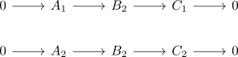
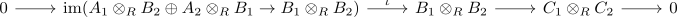
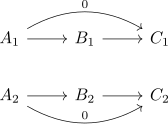
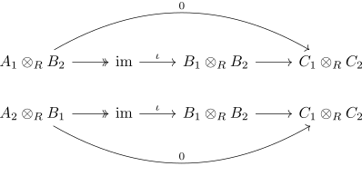
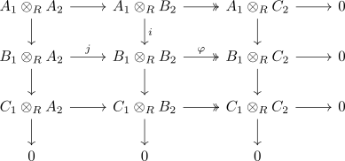

tensoring of two short exact sequences
Proposition
Let \(R\) be a commutative ring and $\mathrm{RMod}$ the category RMod. Suppose

Then

is also short exact
Proof
first map injective
follows from the definition
zero
It holds that that

hence by right exact functor preserves zero morphisms, tensor functor as right exact functor

As
preimage
Consider the diagram

where the right and bottom maps are epimorphisms by right exactness of the tensor functor
Suppose
then $\varphi(x) \in B_1 \otimes_R C_2$ lifts to an element $a' \in A_1 \otiems_R C_2$. By surjectivity there also exists a preimage $a \in A_1 \otimes_R B_2$.
Then it follows that
hence by exactness tehre exists a preimage $b \in B_1 \otimes_R A_2$.
Then we get $(a,b) \in A_1 \otimes_R B_2 \oplus B_1 \otimes_R A_2$. It follows that